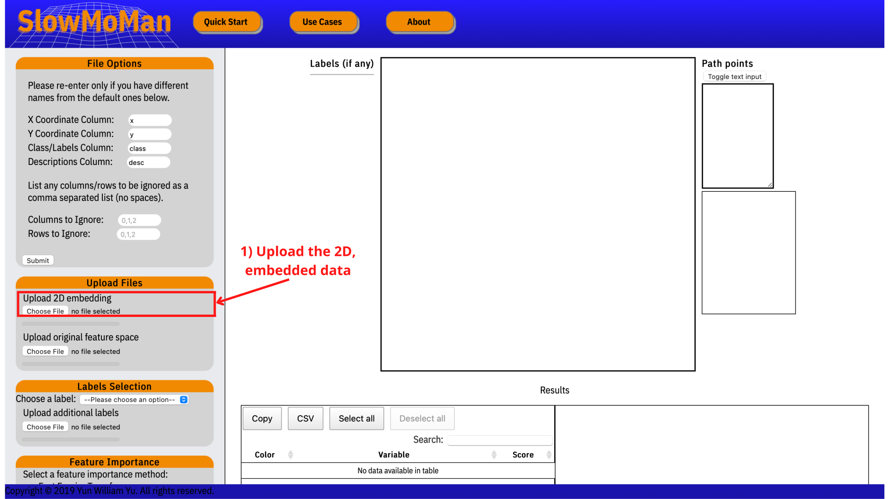
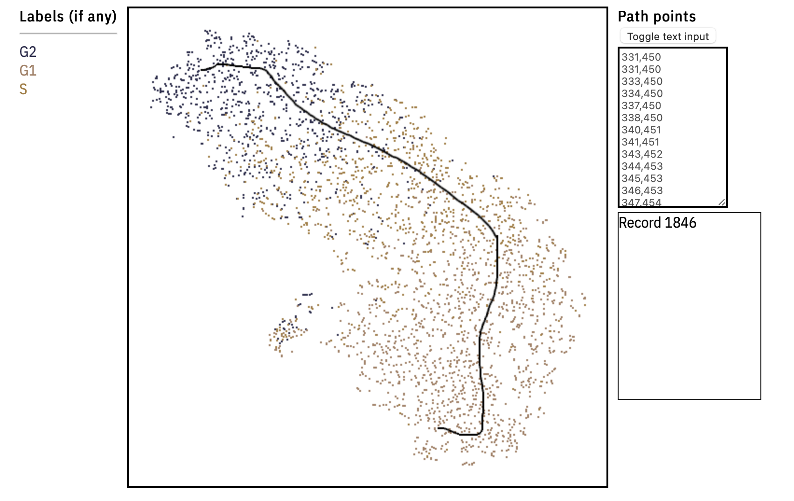
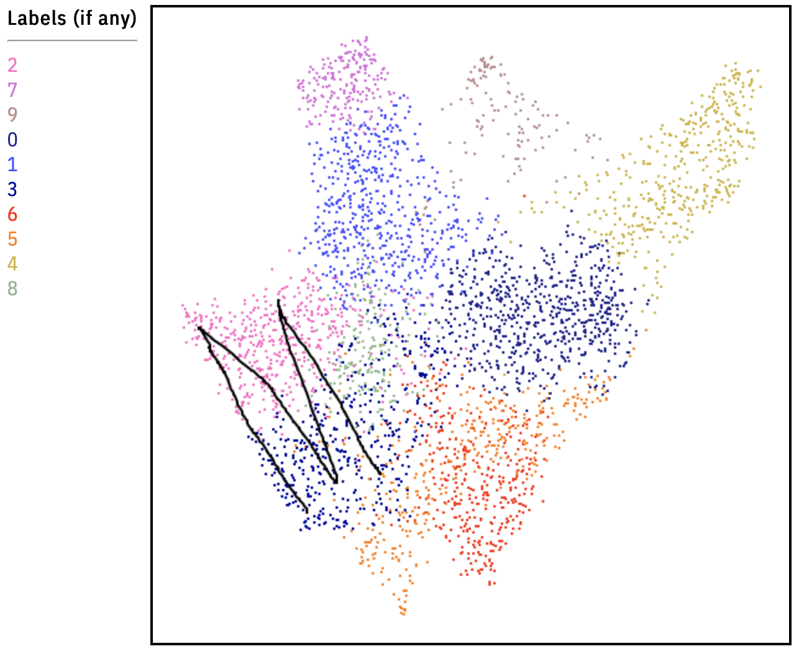
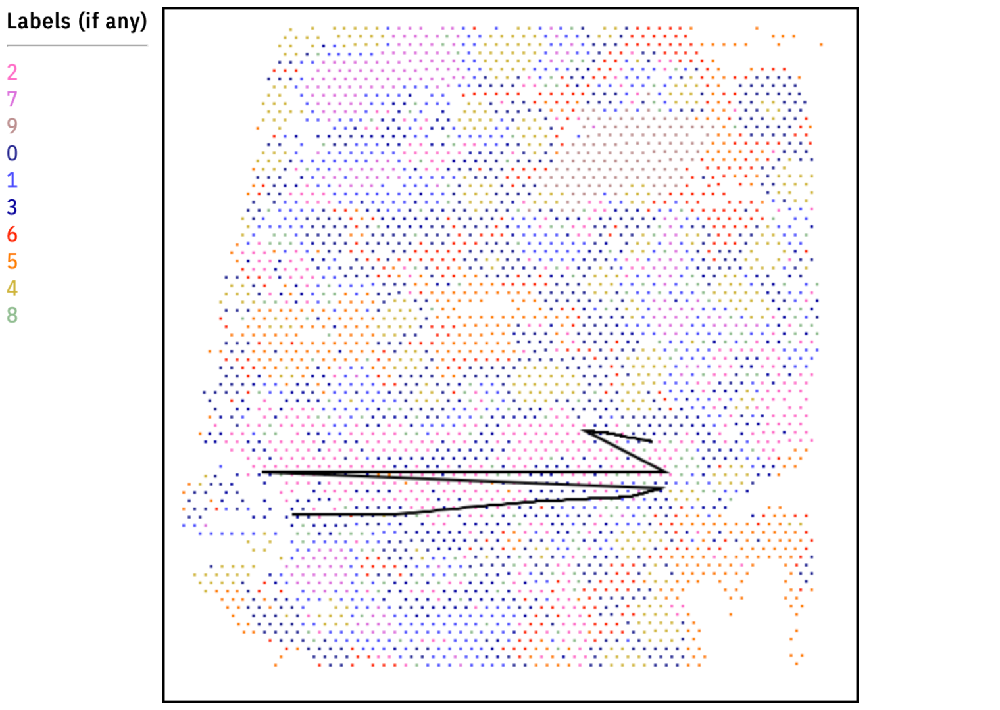
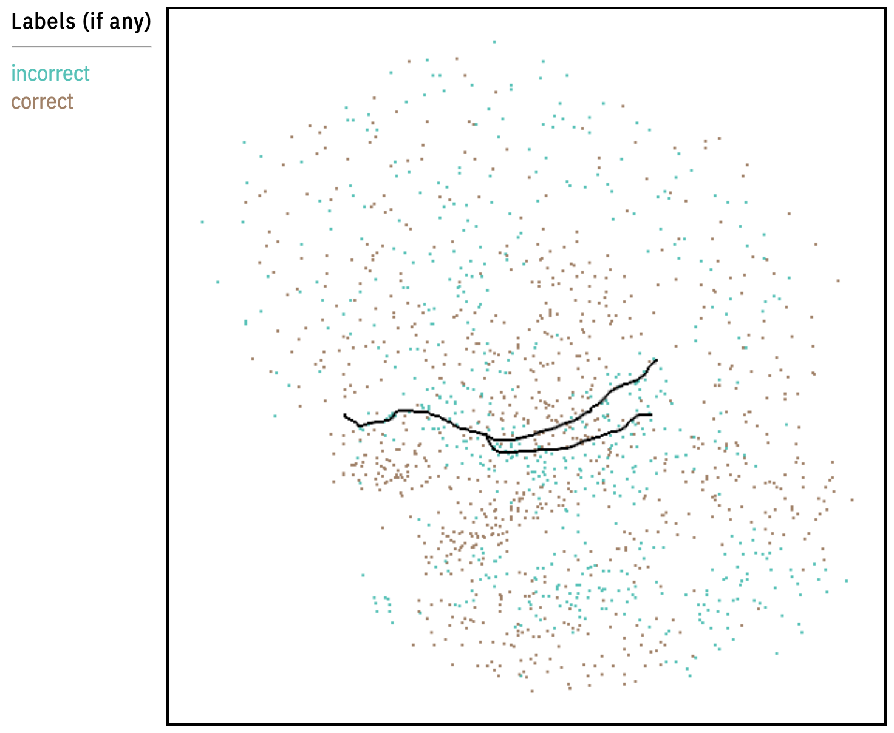
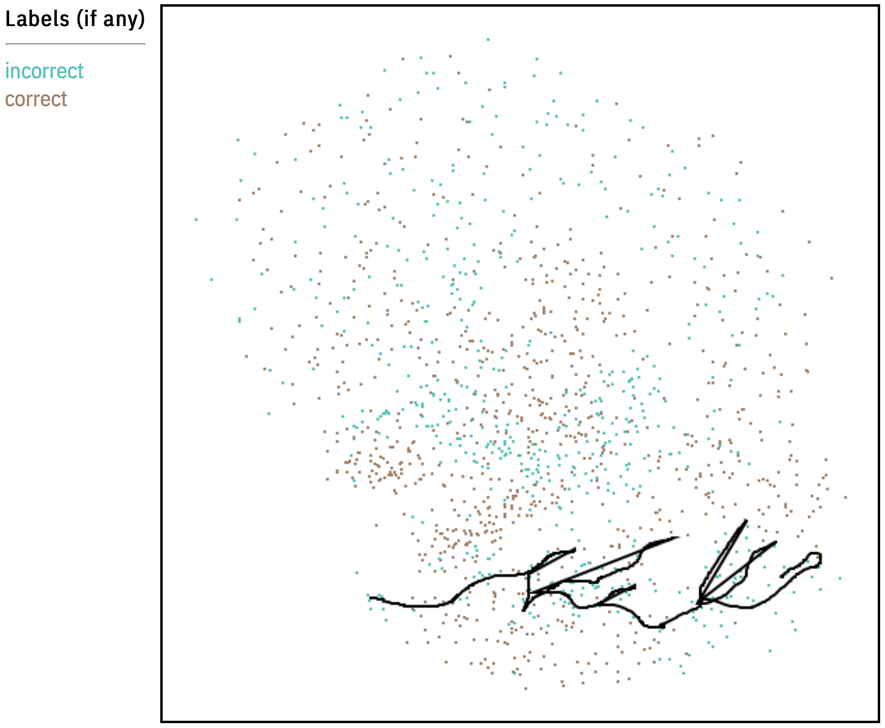

Beyond the quick start tutorial, we present a number of more advanced use cases from across bioinformatics.
For full descriptions of each use case, see the manuscript. Here,
we provide:
1. A screenshot of the embedding and drawn path
2. The exact path coordinates of the path (as a .txt file)
3. The file containing the 2D embedding
4. The file containing the original feature space
All the listed artifacts above are also stored in the Google drive folder below.
Artifacts: Google Drive folder with artifacts
For the first use case below, we provide a full tutorial. For all other use cases after that, simply replicate the steps of
this tutorial to reproduce the results. Of course, ensure you have downloaded the data and path coordinates
(see Google Drive folder with artifacts)
for the respective use case you wish to replicate. Links are also included to the origins of each use case.
Use Case 1: Trajectory Inference on Mice Hematopoiesis Data.
See the original Scanpy trajectory inference tutorial
Step 1: Upload the 2D embedding of the data.

Step 2: Upload the original data.

Step 3: Replicate the manifold of the paper (see the .txt file of the Google drive folder for the path coordinates).

Step 4: Choose a metric for feature ranking. In order the replicate the results of the paper, be sure to use "FFT Score".

Step 5/6: Save the highly ranked features.

Use Case 2: Using Deep Learning to Recover the Cell Cycle.
See the original PAGA use case tutorial

Use Case 3: Spatial Transcripomics with Human Lymphnode Sample.
See the original Scanpy spatial transcriptomics tutorial


Use Case 4: Automatic Cell Classification.
Access the original paper, models, and data Comparison of automatic cell identification methods

